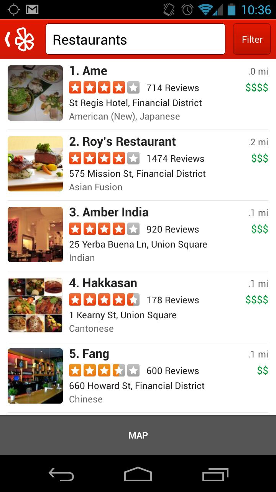
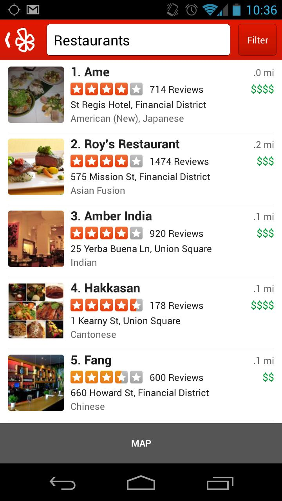

MentorMe
Peer learning and coaching made easy!
May 2014
Introduction
Pieter de Jong
Nidhi Shah
Rong Hu
Why MentorMe
“In learning you will teach, and in teaching you will learn.”
- Phil Collins
Why should I mentor?
- Satisfaction...
- from helping others achieve their professional goals.
- Confidence...
- in your own professional competence.
- Opportunities...
- to hone your leadership and management skills.
- to give back to the community.
- to build an enduring career network.
- Perspectives...
- from future members in your profession.
Benefits of having a mentor - 1
- Support
- Someone to bounce ideas off,
- ...to cheer you on,
- ...to hold you accountable,
- ...to give you critical feedback and impartial advice,
- ...to help you to make decisions about your career path,
- Network
- Gain access to your mentor’s network of contacts.
Benefits of having a mentor - 2
- Awareness
- Increased self-awareness and self-discipline.
- Develop a sharper focus on what is needed to grow professionally within the organization
- Increase the capacity to translate values and strategies into productive actions.
- Knowledge
- Learn from industry insiders' real-world experiences.
- Learn specific skills relevant to your professional goals.
- Gain greater knowledge of career success factors.
Inspirations
 

Demo
Next Steps
- Expand mentor/mentee skills beyond programming
- Integration with Meetup and other apps
- In-app chat or drawing board
- Matching on availability